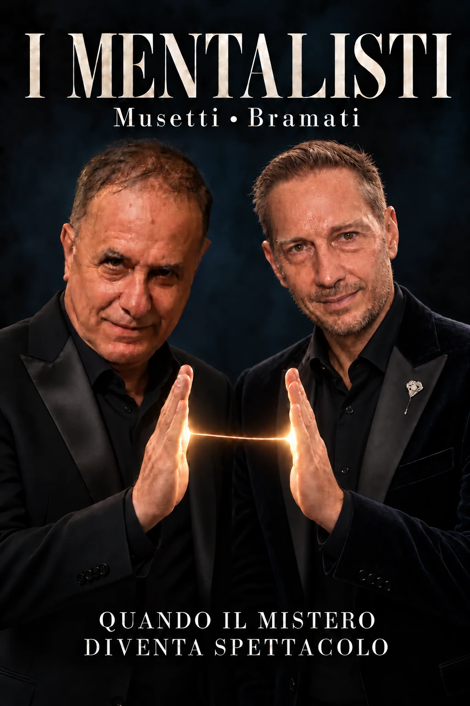

Lettura del pensiero
Un dettaglio che avete soltanto immaginato prende voce. Il segreto sembra aver trovato la strada per uscire.
PRIVATE PARTY · CORPORATE · EVENTI
MUSETTI • BRAMATI
Due personalità. Un’intesa sorprendente.
Il vostro evento, oltre ciò che immaginate.
ROMA · IN TUTTA ITALIA

L’ESPERIENZA
Un pensiero custodito. Una scelta inattesa. Una coincidenza che sembra conoscervi.
Paolo Musetti e Riccardo Bramati intrecciano mentalismo, micromagia e racconto in uno spettacolo vivo, elegante e coinvolgente. Il pubblico entra nell’azione: ogni incontro dà forma a una serata diversa.
Curiosità, complicità e meraviglia. Da condividere, e da ricordare.
IL LINGUAGGIO DEL MISTERO
Le carte ESP aprono una porta.
La vostra immaginazione fa il resto.
Un dettaglio che avete soltanto immaginato prende voce. Il segreto sembra aver trovato la strada per uscire.
La materia sembra rispondere a un’intenzione. Un piccolo movimento, un grande punto interrogativo.
Ciò che è nascosto altrove sembra diventare vicino. Percezioni e intuizioni si incontrano oltre lo sguardo.
Un passaggio narrativo tra emozione, immaginazione e mistero. Un’esperienza in cui lasciarsi sorprendere.
Scelte che si richiamano, coincidenze che si intrecciano. L’intesa tra persone diventa il cuore dello spettacolo.
Una decisione presa adesso sembra aver lasciato una traccia prima ancora di essere pensata.
La selezione delle esperienze viene concordata in base al formato e all’occasione.
UN EVENTO. IL VOSTRO.
01 · PRIVATE PARTY
Celebrazioni private, cene esclusive, anniversari e ricevimenti di nozze. Dal salotto di casa a una location speciale, un’esperienza da vivere insieme ai vostri ospiti.
Immaginiamo il vostro evento ↗02 · CORPORATE
Convention, cene aziendali, gala e incontri professionali. Uno spettacolo che crea attenzione, accende conversazioni e offre al vostro evento un momento da ricordare.
Progettiamo il momento giusto ↗IL RITMO DELLA SERATA
Piccoli incontri ravvicinati, tra un momento e l’altro della serata. La magia nasce a pochi centimetri dagli occhi.
Un’ora di mentalismo personalizzabile, con gli ospiti al centro di un’esperienza condivisa.
Durata, ritmo e articolazione vengono definiti insieme, secondo le vostre necessità.
DUE PERCORSI. UN’INTESA.
Autore e performer con oltre 45 anni di esperienza tra teatri, convention, eventi privati e televisione. Finalista a Italia’s Got Talent, ha partecipato a programmi come Amici, Avanti un Altro e I Soliti Ignoti. Nel mentalismo intreccia racconto, emozione e connessioni invisibili, con un linguaggio scenico personale.
Ingegnere, manager, formatore, prestigiatore e mentalista. Si avvicina alla magia da giovanissimo, ispirato da Silvan e Tony Binarelli. Nel 2019 viene eletto presidente del Club Magico Italiano – Regione Lazio, portando il club sui palcoscenici internazionali in Canada e Brasile. Il suo Mental Magic Comedy Show unisce magia, comicità e mistero.
PRIMA DEL SIPARIO
IL PROSSIMO PASSO
Un preventivo personalizzato a seconda delle vostre necessità. Diteci dove, quando e per quale occasione: iniziamo da qui.
Base a Roma. Disponibili in tutta Italia.